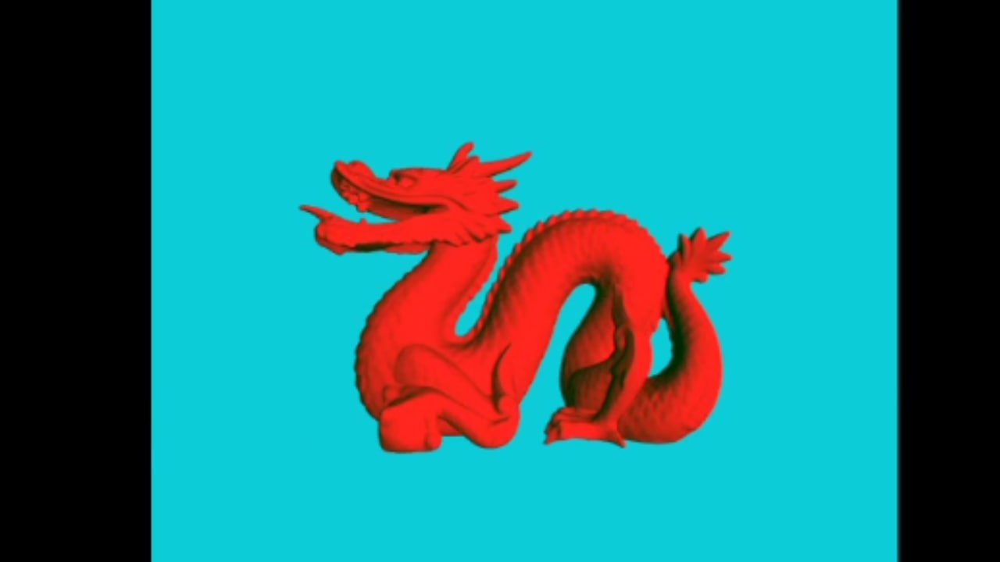
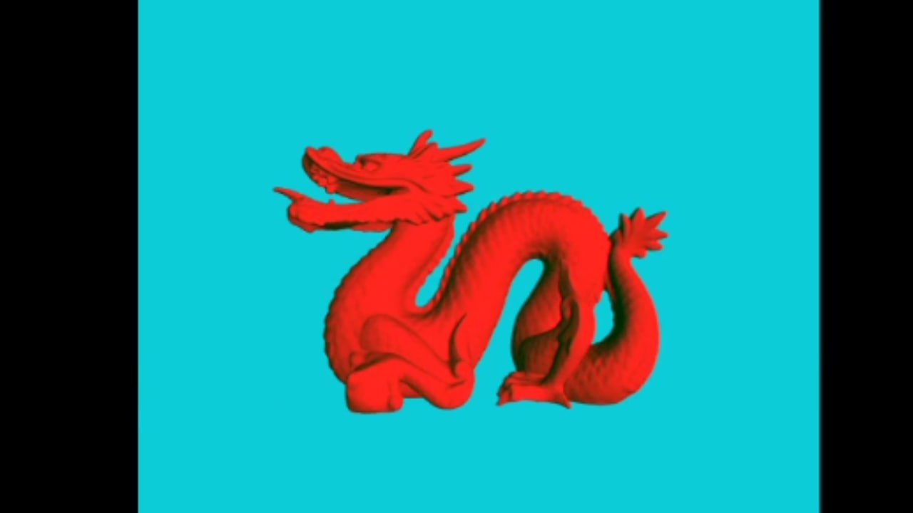

3D Models and Lighting
Project Rubric and Directions
 

Goals for this Project:
- Parse the faces from the .obj files and display the models with triangles.
- Use the mouse to rotate and scale the model.
-
Assign different material properties for each model:
- Shiny, with no diffuse reflection
- No shininess, only uses diffuse reflection
- Significant diffuse and specular reflection components
- Create three different light sources: point light, directional light, and spotlight. Render spheres to represent the location and color of the light sources.
- When a light turns off, it will be fixed in the model space.
- When a model is scaled, the distance of the lights from the center of the graphics window changes.
Keyboard Key Functions:
- F1: Render the bunny model
- F2: Render the dragon model
- F3: Render the bear model
- n: Switch between normal coloring and the Phong illumination model
- 1: Enable/disable point light rotation
- 2: Enable/disable spotlight rotation
- 3: Enable/disable directional light rotation
- 5: Turn the spotlight on/off
- 6: Turn the directional light on/off
- 0: Turn model rotation on/off
- W/w: The spotlight becomes wider/narrower
- E/e: The spot edge becomes sharper/blurrier
Mouse Functionality:
- Move the cursor to move the light sources.
- Hold the left mouse button and move the cursor to rotate the model.
- Hold the right mouse button and move the cursor up and down to scale the model up and down, respectively.